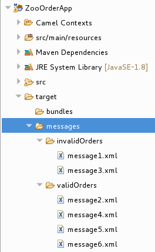

This tutorial shows how to add a Content-Based Router (CBR) and logging to a route.
A CBR routes a message to a destination based on its content. In this tutorial, the CBR that you create routes messages to different folders (valid or invalid) based on the value of each message’s quantity field (the number of animals in the order). The maximum value of animals for each order is 10. The CBR routes the messages to different folders, depending on whether the quantity is greater than 10. For example, if a zoo orders five zebras and only three zebras are available, the order is copied to the invalid order target folder.
In this tutorial you complete the following tasks:
- Add a Content-Based Router to your route
Configure the Content-Based Router:
- Add a log endpoint to each output branch of the content-based router
- Add a Set Header EIP after each log endpoint
- Add an Otherwise branch to the content-based router
To start this tutorial, you need the ZooOrderApp project resulting from one of the following:
Completing the Running a Route tutorial.
or
- Completing the Setting up your environment tutorial and replacing your project’s
blueprint.xmlfile with the providedblueprintContexts/blueprint1.xmlfile, as described in About the resource files.
To add and configure a Content-Based Router for your route:
- In Project Explorer, double-click
ZooOrderApp/src/main/resources/OSGI-INF/blueprint/blueprint.xmlto open it in the Editor view. - On the Design canvas, select the
To_Receivednode and then select the trash can icon to delete it. In the Palette, open the Routing drawer, click a Choice (
 ) pattern, and then (in the Design canvas) click the
) pattern, and then (in the Design canvas) click the
From_from1node.
The
Route_route1container expands to accommodate theChoice_choice1node. The error icon indicates that theChoice_choice1node requires a child node, which you add next.From the Routing drawer, click the When (
 ) pattern and then, in the canvas, click the
) pattern and then, in the canvas, click the
Choice_choice1node.The
Choice_choice1container expands to accommodate theWhen_when1node:
The
 decorating the
decorating the When_when1node indicates that one or more required property values must be set.![[Note]](imagesdb/note.png)
Note The tooling prevents you from adding a pattern to an invalid drop point in a Route container.
On the canvas, select the
When_when1node, to open its properties in the Properties view:
- Click the
 button in the Expression field to open
the list of available options.
button in the Expression field to open
the list of available options. Select xpath (for the XML query language) because the test messages are written in XML.
Note Once you select the Expression language, the Properties view displays its properties in an indented list directly below the Expression field. The Id property in this indented list sets the ID of the expression. The Id property following the Description field sets the ID of the
Whennode.In the indented Expression field, type:
/order/orderline/quantity/text() > 10This expression specifies that only messages in which the value of the quantity field is greater than 10 travel this path in the route (to the invalidOrders folder).
Leave each of the remaining properties as they are.
Note The Trim option (enabled by default) removes any leading or trailing white spaces and line breaks from the message.

- Save the routing context file.
Click the Source tab to view the XML for the route:

For the ZooOrder application example, you add a log message so that you can track an XML message as it passes through the route. When you run the route, the log message appears in the Console view.
Follow these steps to add logging to your CBR route:
- In the Design tab’s Palette, open the Components drawer and click the Log component (
 ).
). In the canvas, click the
When_when1node.The
When_when1container expands to accommodate theLog_log1node:
- On the canvas, select the
Log_log1node to open its properties in the Properties view. In the Message field, type:
The quantity requested exceeds the maximum allowed - contact customer.
Leave the remaining properties as they are.
+
| Note |
|---|---|
The tooling auto-generates a log node id value. In the Fuse Integration perspective’s Messages view, the tooling inserts the contents of the log node’s Id field in the Trace Node Id column for message instances, when tracing is enabled on the route (see the Tracing a message through a route tutorial). In the Console, it adds the contents of the log node’s Message field to the log data whenever the route runs. |
- Save the routing context file.
A message header contains information to process a message.
To add and configure message headers:
- In the Palette, open the
Transformation drawer and then click the Set
Header (
 ) pattern.
) pattern. In the canvas, click the
Log_log1node.The
When_when1container expands to accommodate theSetHeader_setHeader1node:
On the canvas, select the
SetHeader_setHeader1node to open its properties in the Properties view:
- Click the
button in the Expression field to open
the list of available languages, and then select constant.
- In the indented Expression field, type
Invalid. - In the Header Name field, type
Destination. Leave the remaining properties as they are.

- In the Palette, open the Components drawer and then click the File (
 ) component.
) component. In the canvas, click the
SetHeader_setHeader1node.The
When_when1container expands to accommodate theTo_to1node.
On the canvas, select the
To_to1node to open its properties in the Properties view:
On the Details tab, replace directoryName with
target/messages/invalidOrdersin the Uri field, and type_Invalidin the Id field:
- Save the routing context file.
Click the Source tab to view the XML for the route:

So far, the CBR handles messages that contain invalid orders (orders where the quantity value is greater than 10).
To add and configure an otherwise branch of your route to handle valid orders (that is, any XML messages that do not match the XPath expression set for the When_when1 node):
- In the Palette, open the Routing drawer and click the Otherwise (
) pattern.
In the canvas, click the
Choice_choice1container:
The
Choice_choice1container expands to accommodate theOtherwise_otherwise1node.- On the canvas, select the
Otherwise_otherwise1node to open its properties in the Properties view. In the Id field, change
_otherwise1to_elseValid:
To configure logging for the otherwise branch:
- In the Palette, open the Components
drawer and and then click the Log (
) component.
In the canvas, click the
Otherwise_elseValidnode:The
Otherwise-elseValidcontainer expands to accommodate theLog_log2node.
- On the canvas, select the
Log_log2node to open its properties in the Properties view. In the Message field, type
This is a valid order - OK to process.
Leave the remaining properties as they are.
- Save the route.
To configure a message header for the otherwise branch:
- In the Palette, open the Transformation drawer and then click the Set Header pattern.
In the canvas, click the
Log_log2node.The
Otherwise_elseValidcontainer expands to accommodate theSetHeader_setHeader2node.
Note You can collapse containers to free up space when the diagram becomes congested. To do so, select the container you want to collapse, and then click its
 button:
button:
To reopen the container, select it and then click its
 button:
button:
Collapsing and expanding containers in the Design tab does not affect the routing context file. It remains unchanged.
- On the canvas, select the
SetHeader_setHeader2node to open its properties in the Properties view. - Click the
button in the Expression field to open
the list of available languages, and select
constant.
- In the indented Expression field, type
ReadyForDispatcher. - In the Header Name field, type
Destination. Leave the remaining properties as they are.

To specify the target folder for the valid messages:
- In the Palette, open the Components
drawer and then select the File (
) component.
In the canvas, click the
SetHeader_setHeader2node.The
Otherwise_elseValidcontainer expands to accommodate theTo_to1node.
- On the canvas, select the
To_to1node to open its properties in the Properties view. In the URI field, replace directoryName with
target/messages/validOrders, and in the Id field, type_Valid.
Save the routing context file.
The completed content-based router should look like this:

Click the Source tab at the bottom, left of the canvas to display the XML for the route.
<?xml version="1.0" encoding="UTF-8"?> <blueprint xmlns="http://www.osgi.org/xmlns/blueprint/v1.0.0" xmlns:xsi="http://www.w3.org/2001/XMLSchema-instance" xsi:schemaLocation="http://www.osgi.org/xmlns/blueprint/v1.0.0 https://www.osgi.org/xmlns/blueprint/v1.0.0/blueprint.xsd http://camel.apache.org/schema/blueprint http://camel.apache.org/schema/blueprint/camel-blueprint.xsd"> <camelContext id="_context1" xmlns="http://camel.apache.org/schema/blueprint"> <route id="_route1"> <from id="_from1" uri="file:src/data?noop=true"/> <choice id="_choice1"> <when id="_when1"> <xpath>/order/orderline/quantity/text() > 10</xpath> <log id="_log1" message="The quantity requested exceeds the maximum allowed - contact customer."/> <setHeader headerName="Destination" id="_setHeader1"> <constant>Invalid</constant> </setHeader> <to id="_Invalid" uri="file:target/messages/invalidOrders"/> </when> <otherwise id="_elseValid"> <log id="_log2" message="This is a valid order - OK to process."/> <setHeader headerName="Destination" id="_setHeader2"> <constant>ReadyForDispatcher</constant> </setHeader> <to id="_Valid" uri="file:target/messages/validOrders"/> </otherwise> </choice> </route> </camelContext> </blueprint>
You can run the new route as described in the Running the route tutorial and look at the Console view to see the log messages.
After you run it, to verify whether the route executed properly, check the target destination folders in the Project Explorer:
- Select
ZooOrderApp. - Right-click it to open the context menu, and then select Refresh.
Under the project root node (
ZooOrderApp), locate thetarget/messages/folder and expand it.Check that the
target/messages/invalidOrdersfolder containsmessage1.xmlandmessage3.xml.In these messages, the value of the
quantityelement exceeds 10.Check that the
target/messages/validOrdersfolder contains the four message files that contain valid orders:message2.xmlmessage4.xmlmessage5.xmlmessage6.xmlIn these messages, the value of the
quantityelement is less than or equal to 10.Note To view message content, double-click each message to open it in the route editor’s XML editor.
In the next tutorial, Adding another route to the routing context, you add a second route that further processes valid order messages.